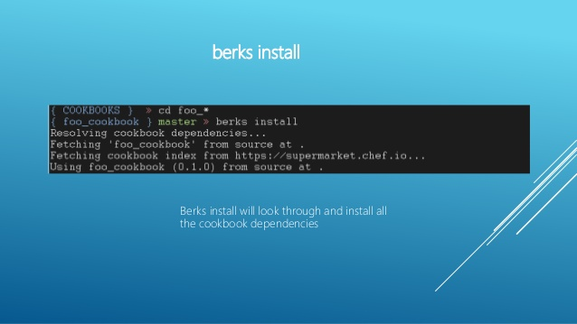

<div class="panel">
    <div class="panel-heading">Berkshelf</div>
    <div class="panel-block">
        Berkshelf is a cookbook management tool that allows you to upload your cookbook and all of its dependencies to the Chef Server.  
    </div>
    <div class="panel-block" style="display:block;">
        
    </div>
    <div class="panel-block">
        <div class="panel">
            <div class="panel-heading">Berkshelf Commands</div>
            <div class="panel-block" style="display:block;">
                In the SSH client, run this command to resolve cookbook dependencies:<br>
                <code>berks install</code>
            </div> 
            <div class="panel-block" style="display:block;">
                Run this command to upload the dependencies to the Chef Server:<br>
                <code>berks upload</code><br>
                To verify the uploaded dependencies, run:<br>
                <code>knife cookbook list</code>
            </div>
        </div>
    </div>
</div>